Abstract
This project builds a text to image search over a personal corpus and studies where it succeeds and where it fails. The system compares three retrieval routes: matching a written query against image embeddings (CLIP), against machine written captions from a vision language model, and against a weighted fusion of the two. Evaluating on an archive whose contents are known lets every retrieval be judged correct or incorrect. The central finding is a pair of opposite failures, a cat the caption route cannot find and an octopus the visual route cannot find, that together show when each route wins and why fusing them raises precision. (Part of what drew me to the topic was plain curiosity about how the search box in a phone photo gallery might work under the hood.)
Motivation
Text to image retrieval, finding a picture from a written query, is now a common feature, but its behaviour is easy to take for granted and hard to inspect. This project builds such a system from open components and treats its mistakes as the object of study: not only what the pipeline retrieves well, but what it retrieves wrongly, and why. A personal curiosity about how the search box in a phone photo gallery might work was part of the initial pull, but the project is framed around the retrieval behaviour itself rather than around reverse engineering any product.
Answering that requires a corpus whose contents are fully known, so that each result can be checked without ambiguity. My own archive of food photographs, collected over about six years, serves that role: because I recognise every dish and setting, I can identify precisely when the system retrieves something incorrect. The personal collection is the test instrument, not the subject of the project.
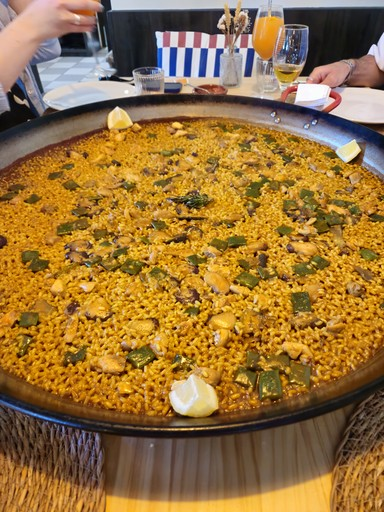
Corpus statement
The archive is a collection of 56 food photographs gathered over roughly six years (2020 to 2026). It is a personal, slightly involuntary diary of longing for home laid out as data.
Most images were taken in Spain, with a few in Germany, where I live. They are dishes I photographed in restaurants and at home: mostly Spanish food, the meals I miss most while living abroad, mixed with food I have cooked myself, meals cooked by others, and photos that family and friends deliberately sent me to tease me. The cuisines vary more than the locations: alongside Spanish dishes there are meals from Asian restaurants (sushi, ramen, takoyaki, bibimbap, kimchi) that I photographed in Spain and Germany rather than abroad. So the corpus is geographically narrow but varied in the type of food it shows, and almost entirely food on tables.
Curation
I chose these images for two reasons. First, variety: a spread of dishes, cuisines and settings rather than fifty plates of the same thing, so the retrieval system has something to distinguish. Second, I deliberately included two photographs of cats, the only non food content, to see how a system built and prompted around food would treat the exception. Those two images turned out to be among the most informative in the whole project.
Rights
All images are my own or were shared with me privately for personal use, and I have the right to publish them. There are no identifiable third parties in the set, so the full corpus can be shared publicly.
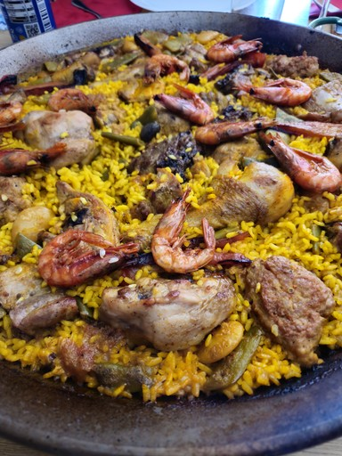
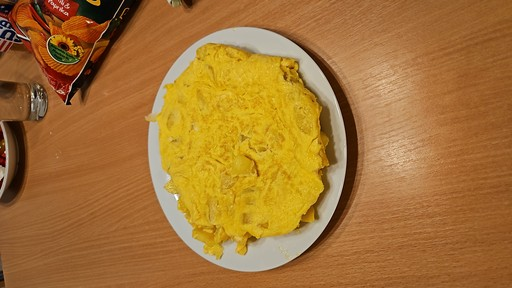
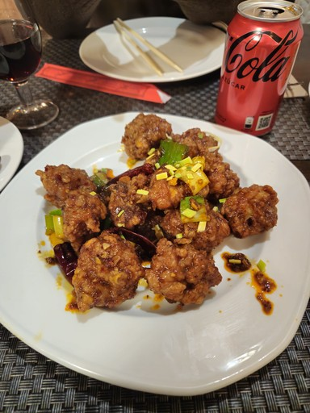
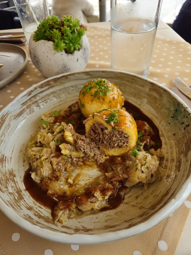
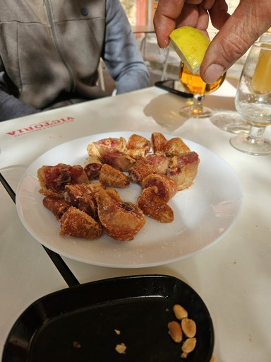
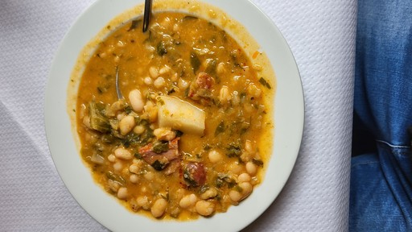
Approach
The system offers three retrieval routes over one corpus, and an answering layer on top. Everything is cached to disk so the pipeline runs without re-running the GPU work.
The level was not fixed in advance. I started at L1 (visual search) and moved up to L2 and then L3 as time allowed, treating each level as a checkpoint that works on its own rather than aiming from the start at a single closed goal. Reaching L3 within the available time also left room for smaller experiments that grew out of questions raised while building the pipeline, such as comparing CLIP against a newer encoder (SigLIP2) to test whether the retrieval limits I observed were specific to CLIP or shared across this family of models.
L1, The Finder: visual route
The query is embedded by CLIP's text encoder and matched, by cosine similarity, directly against the image embeddings. No captions, no generation.
L2, The Companion: caption route
Each image is described once by Gemma; those captions are embedded by CLIP's text encoder. The query is matched against the caption embeddings, and Gemma then answers grounded only in the retrieved captions.
L3, The Critic: hybrid route
Both similarity scores (visual and caption) are min-max normalised and fused as alpha times visual plus (1 minus alpha) times caption, with alpha = 0.7. The retrieved images themselves, capped at four, are then passed as pixels into Gemma's context for a multimodal answer.
The caption schema (the L2 design decision)
The caption schema matters because the captions, not the pixels, are what the caption route searches. Each image is described by Gemma into a fixed six field template and cached to JSON. During development the captions were regenerated several times while testing different ways of describing the images (see the process section); once a format was settled, they are read from the cache rather than regenerated on every run. Every field has a retrieval purpose:
- Ranked keyword line, first. CLIP encodes only the first 77 tokens of any text and truncates the rest, so the words that distinguish one dish from another must appear at the very start. Ordering the keywords by visual dominance puts the subject ahead of the background inside that token budget.
- Short summary. A dense natural language sentence gives CLIP semantic context that isolated keywords lack, without spending many tokens.
- Confirmed objects with subtypes. A hierarchy such as "Beverage > Soda > Cola" lets the same entry match both broad and specific queries, improving recall without losing precision.
- Probable elements with confidence scores. Marking uncertain content explicitly, rather than asserting it, is what later made the model's hallucinations visible and auditable in the dossier.
- OCR text. Transcribed text makes writing inside an image searchable (menus, labels, packaging).
- Attributes (colour, material, texture). Supports queries about appearance rather than identity.
The vocabulary is deliberately concrete and English, because CLIP is English trained; Spanish terms retrieve worse than their English equivalents.
Hybrid fusion and multimodal answering (L3)
The two similarity vectors are min max normalised and combined as alpha · visual + (1 - alpha) · caption. Normalisation matters: the raw visual and caption similarities occupy different ranges, so without it one route would dominate the sum for reasons of scale rather than relevance. The weight is exposed as a slider and defaults to the empirically best value found by the sweep below. When the Critic answers a question, the retrieved images themselves (capped at four) are passed into Gemma's context rather than answering from captions alone.
Generation parameters
Answer generation runs with greedy decoding (do_sample=False, no temperature or top_p sampling). This is a deliberate choice: for a retrieval and evaluation project, deterministic output makes results reproducible across runs, at the cost of the lexical variety that sampling would add. Sampling parameters would matter more for open ended generation than for grounded answers over a fixed corpus.
Results: precision@3 across three routes
I built a gold standard of 22 queries, each mapped by hand to the images in the corpus that correctly answer it, and measured precision@3 for CLIP only, caption only and hybrid retrieval.
| Route | Mean precision@3 |
|---|---|
| CLIP only (visual) | 0.38 |
| Caption only | 0.35 |
| Hybrid (alpha = 0.5) | 0.50 |
The hybrid route beats both pure routes. The visual route is stronger than the caption route on this very visual corpus, but the caption route rescues specific cases the visual route misses, and the fusion recovers the best of each. The caption number above (0.35) is itself the result of a fix made mid-project: an earlier version of the pipeline scored 0.30 here, before the caption embedding was restructured to stop diluting distinctive objects. The full diagnosis, the fix, and its own limits are in the mis-seeing dossier and process sections below.
Tuning the fusion weight
Sweeping alpha from 0 (captions only) to 1 (visual only) produces a clear peak. Before the caption-route fix, that peak sat at alpha = 0.7 (hybrid 0.47). Re-running the same sweep after the fix moves it: alpha = 0.5 now scores 0.50, a touch ahead of alpha = 0.7 (0.48), and this is the alpha the sweep cell re-saved into evaluation_results.json, so it is the number reported above and the one an independent run of the evaluation cell will reproduce. The direction makes sense: a less noisy caption route earns a little more weight in the blend than it did when it was dragging the average down. The interface itself (Cell 18's slider) still defaults to alpha = 0.7, since that setting specifically keeps the hardest single query ("cat") at the same precision as the pure visual route (0.67) — at alpha = 0.5 "cat" scores lower (0.33) even though the overall mean is higher. Updating the shipped slider default to match the new sweep optimum, or accepting the small mismatch between the interface and the saved evaluation, is listed as a follow-up in the limitations below.
| alpha | 0.0 | 0.1 | 0.2 | 0.3 | 0.4 | 0.5 | 0.6 | 0.7 | 0.8 | 0.9 | 1.0 |
|---|---|---|---|---|---|---|---|---|---|---|---|
| hybrid | 0.35 | 0.36 | 0.36 | 0.42 | 0.48 | 0.50 | 0.48 | 0.48 | 0.45 | 0.42 | 0.38 |
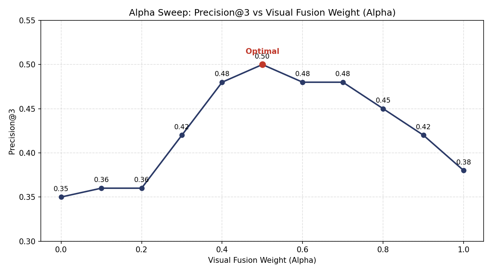
(This chart still shows the pre-fix sweep; regenerate it from Cell 20 against the updated table above before submission.)
Model comparison: CLIP vs SigLIP2
A follow-up experiment, driven by the crowded-embedding finding below, swaps the encoder for a newer one, google/siglip2-base-patch16-224 (2025), and re-scores both retrieval routes on the same gold set. The result is not a clean win but a trade-off: SigLIP2 is a much stronger image encoder, yet a weaker text encoder for these long captions.
| Model | Visual route | Caption route |
|---|---|---|
| CLIP (2021) | 0.379 | 0.348 |
| SigLIP2 (2025) | 0.576 | 0.197 |
Two things follow. First, the visual gap (0.576 vs 0.379) shows how much a newer encoder improves image-side retrieval on this corpus. Second, and more revealing, SigLIP2 does not fix the caption route; it makes it worse, and it is still worse after the CLIP caption route's own fix, which only widens the gap between the two caption routes. That supports the diagnosis that the caption route's weakness is not specific to CLIP but structural to this family: a short text budget over a homogeneous corpus crowds the descriptions together regardless of which encoder reads them. For that reason the shipped system keeps CLIP for a coherent single-model pipeline, and treats the swap as a measured comparison rather than a drop-in replacement.
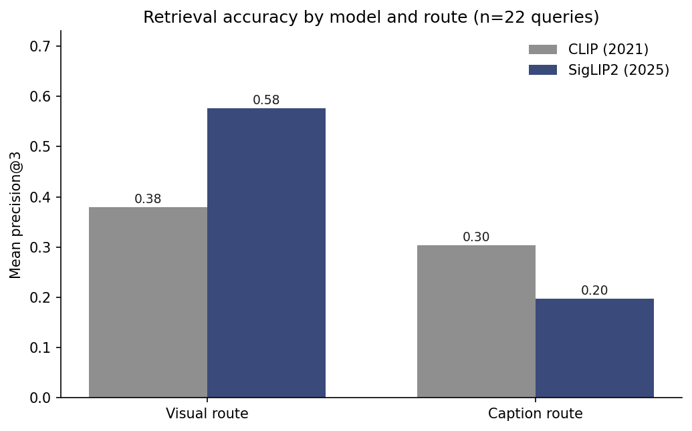
Cross-check: a 20-question, three-level comparison
As an independent sanity check on the gold-set numbers above, I ran a fixed list of 20 questions through all three levels and exported each answer as an image-plus-text panel (the retrieved images and, for L2 and L3, Gemma's grounded answer), then scored precision@3 per question and per level against the same gold labels.
| Level | Mean precision@3 |
|---|---|
| L1, visual | 0.38 |
| L2, caption | 0.33 |
| L3, hybrid | 0.48 |
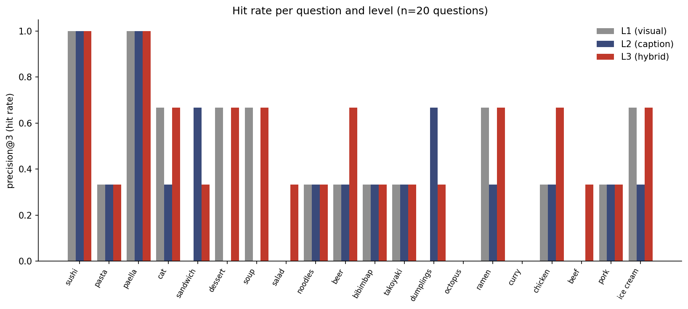
Live examples: the same six queries across all three levels
Six queries, chosen to span clean hits and documented failures, run through all three levels and shown as retrieved — not staged. Images are linked directly from the corpus in the project repository. L1 has no generated text (pure retrieval); L2 and L3 show Gemma's actual grounded answer beneath the images it was given.
L1 — visual route (no generated text)
“sushi”


“paella”


“cat”


“octopus”


“a person smiling”

“gatos”
L2 — caption route
“sushi”

Okay, based on the provided image descriptions, here's a breakdown of what the images show about sushi:
- Image 1: Shows various types of sushi rolls (California roll, salmon sushi) on a black plate, with chopsticks and soy sauce.
- Image 2: Shows California rolls, wasabi, and a bottle of soy sauce on a wooden table.
- Image 3: Shows California rolls and sushi nigiri (salmon nigiri) in a Japanese restaurant setting with takeout containers.
- Image 4: Shows sushi rolls (California rolls) as part of a larger Korean meal with rice and side dishes.
In short, all the images feature sushi, particularly California rolls, as a prominent element.
“paella”


Based on the provided image descriptions, paella is a central theme across all of them. Here's a breakdown of what we can conclude about paella from the descriptions:
- What it is: Paella is consistently described as a rice dish, often a seafood paella, but also featuring variations with meat (like chicken and chorizo), vegetables, and saffron-infused rice.
- Cooking method: It's almost always cooked in a *paella pan* (a wide, shallow pan).
- Ingredients: Common ingredients include shrimp, octopus, mussels, clams, rice, saffron, red peppers, and various vegetables. Meatballs and chorizo are also frequently present.
- Presentation: Paella is typically served in earthenware or metal paella pans, often on a table with a tablecloth.
Essentially, paella is a vibrant, flavorful Spanish rice dish, with many variations in ingredients and presentation.
“cat”

Here's a breakdown of where "cat" appears in the provided image descriptions:
- Image 1: Cat (Domestic Shorthair)
- Image 4: Kitten (Tabby, Brown and white)
Therefore, the answer is cat appears in Images 1 and 4.
“octopus”


Based on the provided image descriptions, octopus appears in Image 2:
OBJECTS: Seafood > Octopus
“a person smiling”
This is a tricky question because none of the images show a person smiling. They all depict tables and food arrangements.
Therefore, the answer is: None of the images show a person smiling.
“gatos”
Based on the provided images, “gatos” (cats) are present in:
- Image 1: A domestic shorthair cat.
- Image 5: A kitten (a young cat).
L3 — hybrid route
“sushi”
The images show a variety of sushi.
“paella”
The images show paella.
“cat”
The first image shows a kitten. The second image shows a cat. The third image shows a leg of ham.
“octopus”
The first image shows chicken in a container with chili peppers. The second image shows sausages. The third image shows chicken.
Therefore, there is no octopus in any of the images.
“a person smiling”
I cannot see a person smiling in any of the images provided.
“gatos”
The first image shows a cat.
Mis-seeing dossier
The most interesting results are the failures. Six are documented here; each is diagnosed to the exact stage of the pipeline where it breaks, because the point is not that the system errs but why.
Two opposite failures: the cat and the octopus
The clearest finding of the project is a symmetric pair. For one query the visual route wins completely; for the other, the caption route does. Together they show when joint embedding retrieval beats caption mediated retrieval and when it is the other way around.
Query: "cat"
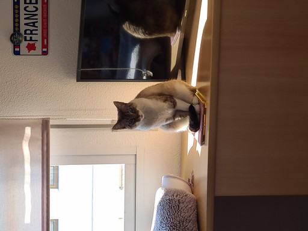
CLIP 0.67 vs caption 0.33 (was 0.00)
In the first version of the pipeline the caption route retrieved neither cat, even though Gemma clearly saw one: its caption opened "Cat, Television, Wall, Interior". After the embedding fix described below, the caption route now retrieves that same cat reliably (rank 1 of 56 for the query "cat"); the second cat, a kitten, is rescued for some phrasings but not others. The visual route finds both cats easily either way.
Query: "octopus"
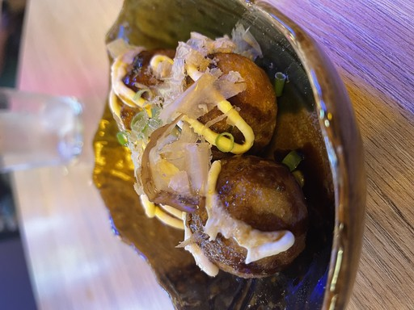
caption 0.33 vs CLIP 0.00
The mirror case. The visual route finds nothing: the one octopus image is takoyaki, where the octopus is hidden inside the batter and never visible. The caption route still retrieves it, because Gemma names the octopus in the description from culinary knowledge rather than from what the pixels show. Here language succeeds where vision cannot, precisely because the object is not visible.
Why the caption route cannot find the cats: a crowded embedding space
The obvious explanation, that the busy caption of the cat on the television ("Cat, Television, Wall, Interior") dilutes the subject, is only part of the story. I tested the second cat photo, a kitten whose caption is completely cat dominant ("Kitten, Cat, Cute, Tabby, Domestic cat"), and searched the caption route for the bare word "cat". The kitten still ranked only 21st, with similarity 0.412, below food photos with no cat at all scoring around 0.50 to 0.53.
So the cause is deeper than dilution. In a corpus that is almost entirely food photographed on tables, the caption embeddings are crowded into a very narrow region of the space: nearly every description shares vocabulary like plate, dish, table, natural lighting, textures. The whole similarity range for a query collapses into a thin band (roughly 0.41 to 0.53 here), so the signal "this is a cat" cannot rise above the background hum of "this is a photo of food". CLIP's text encoder does not separate cat from food strongly enough in this domain. The image encoder does, which is why the visual route finds the cats. This is the mechanistic reason the caption route scored lowest overall, and it motivates the model comparison experiment: the question is whether a newer encoder spreads a homogeneous corpus more, or whether this crowding is a shared limit of the family.
A fix, and exactly how much of the gap it closes
The diagnosis above pointed at what got embedded, not just how much text: the caption route encoded a single vector built from the ranked keyword line plus the summary sentence, so one distinctive object had to compete inside that vector against nine or ten other keywords and a full sentence of scene description. The fix changes what is embedded for retrieval: instead of that combined block, the caption route now encodes the OBJECTS field alone, a dense list of concrete nouns and subtypes ("Cat > Domestic Shorthair", "Television > Flat-screen"), falling back to the keyword line only for the rare caption that lacks an OBJECTS field. Nothing else in the pipeline changes: same cache format, same downstream functions, so the hybrid route and the model comparison experiment above did not need to be touched.
| Query | Image | Before | After |
|---|---|---|---|
| "cat" | cat on television | rank 51/56 (0.20) | rank 1/56 (0.77) |
| "cat" | kitten | rank 21/56 (0.41) | rank 4/56 (0.71) |
| "cats" | cat on television | rank 53/56 (0.16) | rank 1/56 (0.80) |
| "cats" | kitten | rank 23/56 (0.37) | rank 2/56 (0.74) |
| "gatos" | cat on television | rank 55/56 (0.13) | rank 1/56 (0.74) |
| "gatos" | kitten | rank 34/56 (0.34) | rank 5/56 (0.69) |
Across the full 22-query gold set the fix is a real, if partial, win: caption-only mean precision@3 rose from 0.30 to 0.35, and the hybrid mean rose from 0.47 to 0.48 at the same alpha. It is not a uniform win, though, and the exceptions are informative. Several dish-name queries got worse after the switch: soup fell from 0.33 to 0.00, salad from 0.33 to 0.00, ramen from 0.67 to 0.33, octopus from 0.33 to 0.00. The mechanism is the mirror image of the fix itself: Gemma's OBJECTS field tends to write structured category labels ("Food > Noodles, Yellow") rather than the plain dish name, while the plain word often only appears in the keyword line or the summary. Preferring OBJECTS trades some recall on plainly named dishes for a large gain on a genuinely distinctive object that OBJECTS names explicitly and KEYWORDS buried among nine other terms.
The fix is also not complete for its own target case. The kitten photo improved by roughly 20 ranks on every phrasing tested, but only lands inside the top 3 for "cats"; for "cat" and "gatos" it sits just outside, at rank 4 and rank 5. My theory for the residual gap: removing the scene-level dilution (television, wall, lighting) does not remove the underlying crowding, it only moves it one level down. The corpus is still almost entirely food, so OBJECTS-field embeddings for food dishes still occasionally score close to, or just above, the kitten's OBJECTS embedding for a generic query like "cat" — a weaker, second-order version of the same crowded-embedding-space phenomenon, now compressed within the OBJECTS vocabulary instead of across the whole caption. A caption route built on a genuinely small, structured field is less crowded than one built on free text, but "less crowded" is not the same as "uncrowded", and a corpus this homogeneous keeps pushing back against either.
The system responds to descriptive terms, not to questions
A related, practical failure surfaced when I asked the L2 interface a natural language question, "Can you see more than one cat?", at top_k = 3. The route embeds the whole sentence and matches it against the captions, but the embedding of a question is dominated by its interrogative form, not by the word "cat"; combined with the crowding above, no cat entered the top three, so the model answered, correctly for what it was given, that there were no cats. This is a genuine usability limit: an embedding search responds to descriptive terms ("cat", "seafood paella"), not to questions about the images, the same way a phone gallery expects "dog" rather than "how many dogs are here".
Counting and grounding failure in the multimodal answer
A distinct failure appears in the L3 answering mode, where the retrieved images themselves are passed into Gemma's context. Asked "Do you see more than one cat in the images?", the Critic returned a single cat image, stated there was only one cat, and described the other two retrieved images as food. Two things broke at once: a counting error (it undercounted the cats it was shown) and a grounding error (it narrated food that was not the answer to the question). This is not a retrieval problem; the images were in front of it. It is a known behaviour of small vision language models when several images share the context window, where each image competes for a limited token budget and attention.
Confabulation driven by the question
The multimodal mode produces a second, distinct failure. Asked "Show me cats" in L3 with alpha = 0.7, the hybrid route correctly retrieved both cats, and the answer began accurately: "The first image shows a kitten. The second image shows a cat." Then it added a third sentence: "The third image shows a bowl of ramen with a cat sitting in it." The third retrieved image was indeed a bowl of ramen, but there was no cat in it. The model invented one. Where the counting failure was an undercount, this is the opposite: the query "show me cats" primed the model to confirm its premise, so it projected a cat onto a food image that had none. It is a grounding failure biased by the prompt, the small VLM completing the expected pattern rather than reporting what the pixels contain. A confident, fluent answer can be partly accurate and partly fabricated within the same few sentences.
Queried for concepts the corpus does not contain ("a person smiling", "handwritten text"), the caption route returns food anyway, with moderate similarity around 0.47 to 0.50, well below the 0.63 of a true match like sushi. The mechanism is simple: cosine similarity always has a nearest neighbour. Retrieval never returns "nothing"; it returns the least distant point, and in an archive that is almost entirely food, the least distant point is always food. The system has no built in notion of "this query has no answer here". A production search would need a similarity threshold below which it reports an empty result, which this pipeline does not add, so the failure stays visible.
The gold set itself exposed mis-seeing
I first drafted the gold set by searching for keywords in Gemma's captions, then verified every entry against the images using my own written descriptions of the corpus. Several assignments were wrong: a duck dish that Gemma's keywords let slip into "chicken", a drink labelled as beer that was actually mango juice, and a "seafood" dish holding cuttlefish rather than octopus. Gemma mentions ingredients that are not the subject, so keyword presence in a caption is not the same as the object being the subject, or even being present. Correcting these by hand is another face of the same phenomenon, and it is why the final gold set is verified against the images rather than derived from the captions.
Process and dead ends
The caption route did not work at first, and fixing it happened in three honest stages.
Stage 1: broken embeddings
Every Gemma caption opened with the same preamble ("Okay, here is a detailed analysis..."). Because CLIP truncates text at 77 tokens, it was encoding mostly that shared boilerplate, so all caption vectors clustered together and a single image was returned for almost every query.
Stage 2: filter the caption before embedding
I extracted only the informative part of each caption (the keyword line and summary) before embedding. Similarities immediately spread out and became query dependent.
Stage 3: change the prompt
I rewrote the caption prompt so Gemma starts directly with a ranked keyword line and writes no preamble, then re-captioned. This put the discriminative content inside CLIP's first 77 tokens by design. The fix is measurable in the shipped captions: all 56 cached descriptions now begin with the keyword line and none with the discarded "Okay, here is the analysis" preamble that broke the first version.
Stage 4: the fix from stages 1 to 3 was not enough
Stages 1 to 3 fixed a broken caption route (one image dominating every query), but did not fix an accurate one: once captions were well formed, the cat on the television still ranked 51st of 56 for the query "cat", with a caption that plainly opened "Cat, Television, Wall, Interior". Before touching any code again I tried to isolate the cause with a series of throwaway hypotheses, each tested in a standalone notebook against the cached captions so no GPU time was spent re-running Gemma: was CLIP only taking keywords rather than the full description; was the 77 token limit truncating the word "cat" out of the encoded text; had settings tuned for L1's image embeddings leaked into L2's text embeddings. Token counts ruled out truncation directly (the busiest cat caption used 73 to 90 tokens, not enough to cut the keyword line), and the caption route uses its own text encoding path, not L1's image path, ruling out the third guess. The real cause was the dilution described above: KEYWORDS and SUMMARY combined into one vector, with the subject as one term among ten.
Stage 5: a dead end, then the fix that shipped
The first attempted fix embedded every field of the caption (KEYWORDS, SUMMARY, OBJECTS, PROBABLE, ATTRIBUTES, TEXT) as separate vectors per image and took the maximum similarity across them at query time, so a distinctive object in any one field could win regardless of what the rest of the caption said. On the cat query this looked like a clean success (rank 1 of 56). But checked against the full gold set it was a regression, not an improvement: mean caption precision@3 fell to 0.27, worse than the 0.30 it was meant to fix. The reason was a new failure the multi-vector approach introduced: generic fields like PROBABLE and ATTRIBUTES ("Person > Absent", "Colour: Beige, White") sit close to almost any query in CLIP's text space by chance, not because they are relevant, so with five or six vectors competing per image, a couple of unrelated food photos won the maximum for nearly every query tested, cat included. Restricting the embedded fields to just KEYWORDS and OBJECTS, the two fields made of concrete nouns, removed that failure mode and is what shipped, with the numbers in the table above.
Limitations
- The corpus is small (56 images) and thematically narrow (food), so absolute precision numbers should be read as relative comparisons between routes, not as general benchmarks.
- Many gold queries have only one or two correct images, capping their precision@3 at 0.33 or 0.67 and pulling the means down mechanically.
- CLIP is English trained: queries in Spanish ("gato") perform worse than their English equivalents ("cat"). Retrieval quality depends on query language.
- The caption route inherits Gemma's mistakes. Ingredients mentioned in passing become false positives, and a diluted subject becomes a false negative — though the embedding fix (mis-seeing dossier, process stages 4 to 5) reduced the second failure mode without removing it: the rescued kitten photo still misses the top 3 for some phrasings (rank 4 to 5 rather than 1 to 3).
- The embedding fix traded some accuracy for the gain it made: queries for plainly named dishes not phrased the way Gemma's OBJECTS field structures them (
soup,salad,ramen,octopus) scored lower after the fix than before it, even though the mean across all 22 queries improved. - Answer generation in L2 and L3 needs a GPU. Retrieval works on CPU, but the chat answers do not.
- A single fixed fusion weight is not optimal for every query. Cases that are purely visual or purely textual would prefer a different alpha than the global best, and the global best itself moved (0.7 to 0.5) once the caption route was fixed, which the shipped interface does not yet reflect.
Reflection
The initial question, whether a photo library search can be assembled from open, lightweight components, has a qualified answer: yes for retrieval, with clear and diagnosable limits. The system finds what exists in the corpus reasonably well, and the hybrid route beats either single route. The value of using an archive with known contents was that it turned each failure into a specific, traceable claim rather than a vague sense that the model "sometimes gets it wrong". The most useful results were the failures, and in every case the interesting part was locating the exact stage where the pipeline breaks: the averaged text vector, the 77 token limit, the nearest neighbour that is always food, the multimodal context that cannot count. These are the same failure modes a commercial photo search must handle behind a clean interface; building the pipeline exposed them instead of hiding them.
One item from an earlier draft of this reflection, splitting the caption into a separate subject field to counter dilution, was in fact tried before submission, which is its own lesson. The direct version of that idea, embedding every field of the caption separately, made things worse rather than better on the full gold set, and only embedding the two fields made of concrete nouns (keywords and confirmed objects) delivered the improvement, and only a partial one at that. A plausible-sounding fix is not the same as a working one until it is measured against the query it was not built for, not only the one it was. A next version would still let each query choose its own fusion weight (the global-best alpha moved once the caption route improved, which nothing in the interface currently tracks), add a similarity threshold so the system can report an empty result instead of always returning the nearest food photo, and re-open the multi-vector idea with a query-adaptive way to discount generic fields rather than abandoning per-field embeddings outright.
AI use statement
In the interest of transparency: I used an AI assistant (Claude) throughout this project, including to generate code. The pipeline was written by the assistant following my directions and the project brief: I set the goals, the level (L3), the design constraints and the corpus, and I directed the work, reviewed it, ran it and iterated on it. The assistant also helped trace and fix real bugs (a vision language model loaded with the wrong model class, a CLIP call returning a wrapper object instead of a tensor, an interface hanging on a blocking input prompt), refactor the notebook into a cache aware structure, verify my gold set against the images, and draft and edit the text of this documentation page. Later in the project, when I reported that the caption route still could not find a cat I had deliberately planted in the corpus, the assistant helped build isolated, disposable test notebooks to check specific hypotheses against the cached captions without spending GPU time, identified the dilution and crowded-embedding mechanism, tried a multi-vector fix that turned out to regress the gold set, diagnosed why, and arrived at the single-field fix that shipped; I ran each test myself, read the numbers, and decided which version to keep.
The direction of the project is mine: the research question, the choice and curation of the corpus, the design decisions, the diagnoses of each failure, and the interpretation of the results. The assistant accelerated implementation and writing under my supervision rather than replacing the analysis. All results reported here were produced by running the pipeline on my own corpus and verified by me.